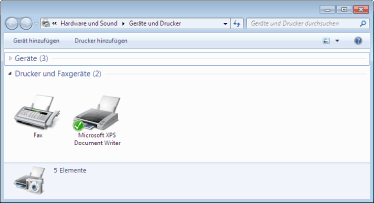

Das Verfahren zum Entfernen des Druckertreibers, um den Computer in denselben Zustand wie vor der Installation des Druckertreibers zurückzusetzen, wird Deinstallation genannt. Zur Deinstallation des Druckertreibers gehen Sie folgendermaßen vor.
1
Wenn ein USB-Kabel angeschlossen ist, schalten Sie den Drucker und Computer aus, und trennen Sie dann das USB-Kabel ab.
2
Schalten Sie den Computer ein, und melden Sie sich dann unter Windows als Benutzer mit Administratorrechten an.
3
Falls geöffnet, schließen Sie die folgenden Dateien und Programme.
Hilfedateien
Statusfenster des Druckers
Bedienfeld
Andere Anwendungen
4
Starten Sie das Deinstallationsprogramm.
Wählen Sie aus dem Menü [Start] die Option [Alle Programme] oder [Programme] → [Deinstallationsprogramm für Canon-Drucker] → [Canon LBP6000 LBP6018-Deinstallationsprogramm] aus.
 Wenn Sie das Deinstallationsprogramm im Menü [Start] nicht finden können Wenn das Dialogfeld [Benutzerkontensteuerung] angezeigt wird Wenn Sie das Deinstallationsprogramm im Menü [Start] nicht finden können Wenn das Dialogfeld [Benutzerkontensteuerung] angezeigt wirdKlicken Sie auf [Ja] oder auf [Fortsetzen].
|
 "
"5
Gehen Sie folgendermaßen vor.
Wenn dieser Drucker angezeigt wird
|
(1)
|
Wählen Sie diesen Drucker aus.
|
|
(2)
|
Klicken Sie auf [Löschen].
|
Wenn dieser Drucker nicht angezeigt wird
Klicken Sie auf [Löschen].
6
Klicken Sie auf [Ja].
|
→
|
Das Deinstallationsprogramm wird gestartet.
Warten Sie, bis der folgende Dialog nicht mehr angezeigt wird. (Die Deinstallation des Druckertreibers kann einige Zeit dauern.)
|
|
Wenn der folgende Dialog angezeigt wird, klicken Sie auf [Ja] oder [Ja für alle].
|
7
Klicken Sie auf [Beenden].
8
Öffnen Sie den Druckerordner.
9
Vergewissern Sie sich, dass das Symbol für diesen Drucker nicht angezeigt wird.

|
WICHTIG
|
||||
|
Wenn das Symbol für diesen Drucker angezeigt wird
|
10
Führen Sie einen Neustart von Windows durch.
|
Gehen Sie dann folgendermaßen vor, um die e-Anleitung zu deinstallieren.
(Wenn Sie die e-Anleitung nicht installiert haben, müssen Sie die folgende Vorgehensweise nicht durchführen.) |
11
Legen Sie die mitgelieferte CD-ROM "User Software" in das CD-ROM-Laufwerk Ihres Computers ein.

12
Klicken Sie auf [Zusätzliche Softwareprogramme].
|
Wenn der oben abgebildete Dialog nicht angezeigt wird Wenn das Dialogfeld [Automatische Wiedergabe] angezeigt wird Klicken Sie auf [AUTORUN.EXE ausführen].
Wenn das Dialogfeld [Benutzerkontensteuerung] angezeigt wirdKlicken Sie auf [Ja] oder auf [Fortsetzen].
|
13
Klicken Sie in [Deinstallationsprogramm für Handbücher] auf [Starten].
14
Klicken Sie auf [Deinstallieren], um die Deinstallation zu starten.
Warten Sie einen Moment, bis die Deinstallation abgeschlossen ist. (Die Deinstallation des Druckertreibers kann einige Zeit dauern.)
15
Klicken Sie auf [Beenden].
16
Klicken Sie auf [Zurück].
17
Klicken Sie auf [Beenden].
 |
Wenn der folgende Dialog angezeigt wird, können Sie die CD-ROM aus dem Laufwerk nehmen.
|